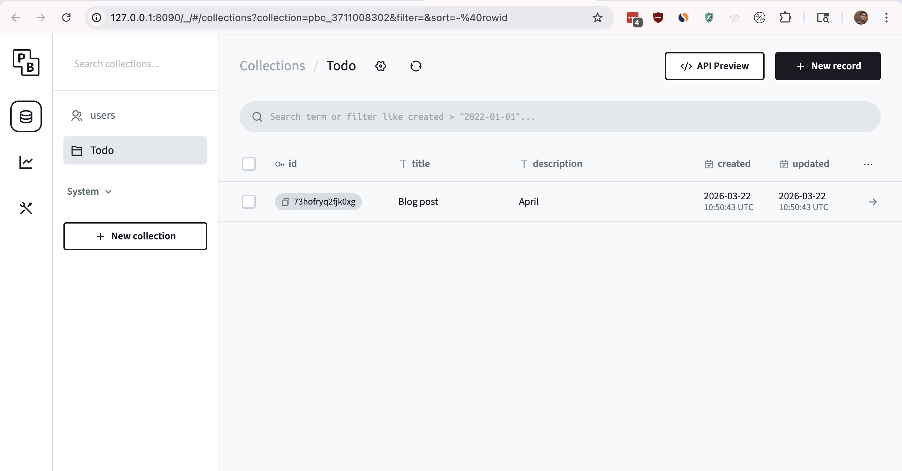
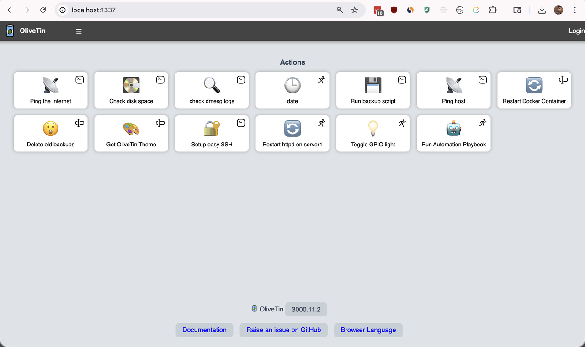

Build/Deploy Full Stack Web Apps with only Config
The best code is the code you don't have to write
Config First Tools
Any tool that provides first class support for configuration files can be considered a Config First Tool. These tools allow developers to setup/build/deploy applications by writing configuration files instead of writing code.
In DevOps world, tools like Terraform, Ansible, and Kubernetes are examples of Config First Tools. These kinds of tools are not that popular in the web development world.
In this article, lets see how we can build a full stack web application using only configuration files.
Todo - Web App
A simple backend API that allows users to manage todo lists. A simple frontend that uses the backend API. A simple script to deploy the backend and frontend applications.
Backend API
PocketBase is a backend API that provides a simple way to create and manage databases, authentication, and file storage. It is a great tool for building simple backend APIs without writing any code.
$ brew install pocketbase $ pocketbase serve
We can create a collection called Todo with required fields and pocketbase will automatically generate the API for us.

Frontend
Lowdefy is a config first tool that allows us to build web applications using yaml config.
$ npm install -g lowdefy $ lowdefy init $ lowdefy dev
For basic crud apps, instead of us writing the boilerplate config, we can ask an AI agent to write the config for us.
Deployment
For deployment, we can use Ansible to deploy both the backend and frontend applications. Here also we can just AI agent to write the playbook for us.
$ pip install ansible $ ansible-playbook deploy.yml
OliveTin

Even though we can use ansible to deploy the applications, it is not that convenient to run ansible playbooks on mobile. OliveTin is a config first tool that allows us to create web UIs for our scripts.
- title: "Deploy ToDo App" popupOnStart: execution-dialog shell: ansible-playbook deploy.yml timeout: 6000 icon: "🤖"
We can create a simple web UI for our deployment script with just 5 lines.
Conclusion
For quick prototyping and simple applications, config first tools can be a great choice as they allow us to build applications without writing any code. They also allow us to focus on the application logic rather than the implementation details.
With the rise of AI, it is much easy to maintain 500 lines of config than 5000 lines of code.
Need further help with this? Feel free to send a message.

Anand Reddy Pandikunta (ChillarAnand)
Improving Health & Wealth with Technology